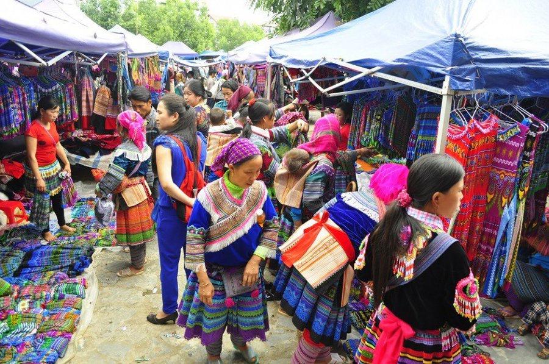

SAPA
SaPa nằm ở đầu một thung lũng sâu với những thửa ruộng bậc thang hùng vĩ, vẫn được canh tác như hàng trăm năm qua. Phông nền ở đây khó nơi nào sánh được: những con đường uốn lượn dẫn tầm mắt xuống đáy thung lũng, nơi dòng sông trắng xóa chảy qua các thửa ruộng lúa, và những dãy núi xanh mướt nối dài đến tận chân trời. Đỉnh cao nhất khu vực, Fansipan, nổi bật trên đường rặng núi sắc sảo phía trên thị trấn.

Những trải nghiệm hàng đầu ở Sa Pa
Chinh phục đỉnh Fansipan
Chỉ với 15 phút trên cáp treo dài 6 km, bạn sẽ lên tới độ cao 3.143 m — đỉnh Fansipan. Tản bộ quanh quần thể chùa trước khi leo những bậc cuối cùng để chạm tay vào “Nóc nhà Đông Dương”. Tầm nhìn từ đây thực sự không gì sánh kịp.
Ghé thăm chợ phiên của đồng bào dân tộc
Mỗi Chủ Nhật, chợ Bắc Hà rực rỡ sắc màu khi hàng trăm thương nhân từ các dân tộc Dao, H’Mông, Xá Phó, Tày và Thái tụ họp, khoác trên mình những bộ trang phục truyền thống. Không khí nhộn nhịp, tiếng mặc cả rộn ràng và muôn màu hàng hóa khiến nơi đây trở nên sống động đặc biệt.

Trekking giữa núi đồi
Sa Pa là một trong những điểm trekking đẹp nhất Việt Nam. Một số bản làng như Cát Cát, Tả Phìn có thể đi bộ tham quan mà không cần hướng dẫn viên. Nếu muốn trải nghiệm trọn vẹn, hãy thử trek qua đêm — băng qua ruộng bậc thang, tắm dưới thác nước và khám phá văn hóa bản địa ngay tại chỗ.
Trải nghiệm lodge giữa mây núi
Tránh xa khu trung tâm đông khách, bạn có thể nghỉ tại những lodge hoặc homestay nằm giữa ruộng bậc thang. Ở đây, bạn sẽ gặp gỡ những người nông dân đang làm việc hàng ngày và tận hưởng không khí trong lành của núi rừng.
Hoạt động khám phá
Đạp xe địa hình là cách tuyệt vời để đến những góc Sa Pa ít người đặt chân tới. Hằng năm, Vietnam Mountain Marathon thu hút khoảng 4.000 vận động viên tham gia, chạy trên những cung đường mòn trâu bò qua các bản làng, với cự ly từ 10 đến 100 km.
Thời tiết Sa Pa
Thời điểm lý tưởng nhất để đến Sa Pa là tháng 9 – 10, khi ruộng bậc thang vào mùa đẹp nhất; hoặc tháng 4 – 5, khi thời tiết dễ chịu và bầu trời quang đãng. Với những ai không ngại nóng, từ tháng 6 – 8 cũng là thời điểm phù hợp. Từ tháng 11 đến tháng 3, thời tiết thường lạnh, đôi khi khá rét.
Di chuyển đến và ở Sa Pa
Tàu hỏa qua đêm là phương tiện phổ biến nhất để đến Sa Pa, dừng tại thành phố Lào Cai — thủ phủ tỉnh lân cận. Từ đây, xe trung chuyển sẽ đưa bạn tiếp tục hành trình lên núi. Ngoài ra, xe khách và xe limousine từ Hà Nội chạy thường xuyên, mất khoảng 5–6 giờ và dừng ngay trung tâm thị trấn. Là một thị trấn vùng núi cao, Sa Pa có nhiều con đường và lối đi dốc. Nhiều du khách chọn đi bộ hoặc taxi để di chuyển. Những người ưa khám phá có thể thuê xe đạp địa hình để rong ruổi trên các cung đường dọc thung lũng.